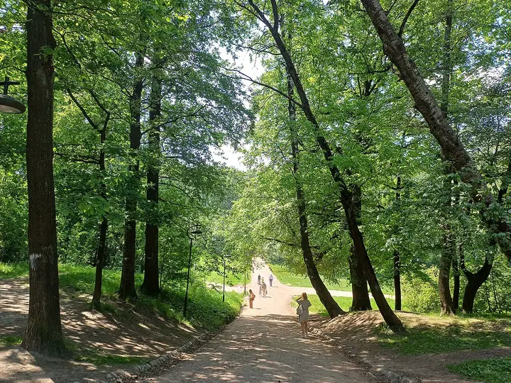

Фото: Spb.Terminator, CC BY-SA 4.0 · Wikimedia Commons
Парк · Приморский район
Удельный парк
Лесопарк у «Пионерской» с холмами, прудами и соснами: летом пикники, осенью рыжие кроны и почти лесная тишина.
- ₽ · до 1 500 ₽ на человека
- Новое в каталоге
Позвать сюда: Удельный паркОткрыть в каталоге: Удельный паркМаршрут до места: Удельный парк
Адрес и детали
- Адрес
- Фермское ш., Удельный парк
Открыть на Яндекс Картах (в новой вкладке) - Метро
- м. Пионерская
- Район
- Приморский район
- Цена
- до 1 500 ₽ на человека
- Проверено
- работает — проверили в октябре 2026
Похожие рядом


Что ещё рядом
Как позвать
- Выбери план, место или событие — в карточке адрес, цены и маршрут в Яндекс Картах.
- Нажми «Позвать сюда» — соберётся приглашение-игра для свидания или голосование для компании.
- Отправь ссылку в любой мессенджер: тебе ответят, а компания отметит, куда и когда может. Бесплатно и без регистрации.